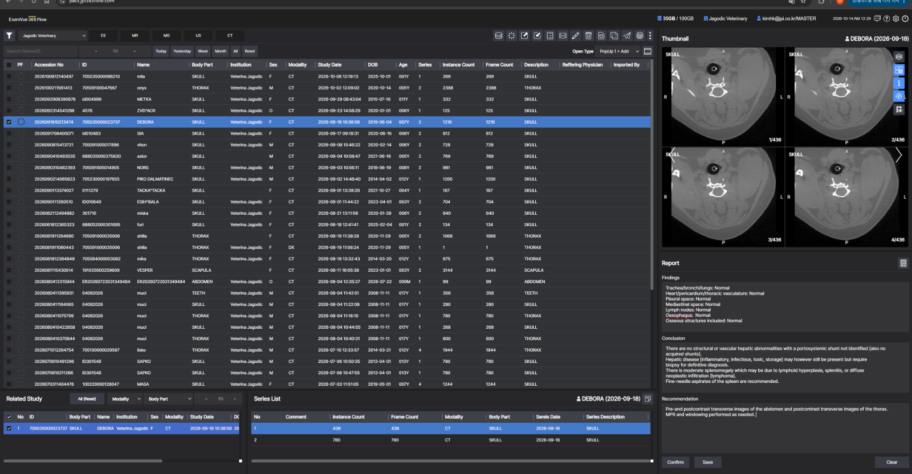
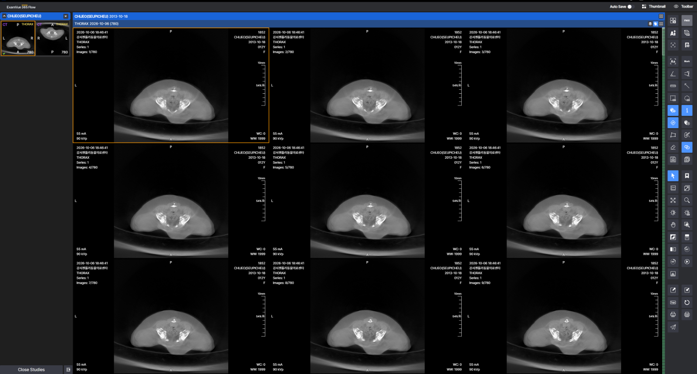

EXAMVUE 365 FLOW
WEB PACS
WEB PACS
설치는 필요 없어요.
CT도 바로 열리는 웹 PACS
설치는 필요 없어요.
CT도 바로 열리는 웹 PACS
검사를 열기 전에 영상을 미리 불러와 두니까, 수천 장짜리 CT도 기다리지 않아요.
저장부터 판독, 리포트 작성까지 병원 어느 PC에서나 이어서 하세요.
클라우드로 바로 시작
병원 서버 설치도 가능
Chrome · Edge면 끝, 설치 없음
동물용 의료기기 2등급 허가

1
2
3
4
1
찾는 검사, 바로 찾기
환자 이름이나 ID, 날짜, 모달리티로 검색하세요.
자주 쓰는 조건은 저장해 두면 한 번에 불러와요.
2
열기 전에 미리 보기
썸네일로 시리즈를 먼저 확인하고,
필요한 영상만 골라 여세요.
3
보면서 바로 판독
영상 옆에서 소견과 결론을 쓰고,
임시 저장했다가 확정하면 끝이에요.
4
지난 검사와 나란히
같은 환자의 이전 검사가 타임라인에 모여 있어,
클릭 한 번으로 비교할 수 있어요.
SYSTEM OVERVIEW
장비는 그대로,
필요한 건 브라우저 하나.
장비는 그대로,
필요한 건 브라우저 하나.
지금 쓰는 촬영 장비에서 영상을 보내면 바로 저장되고, 어느 PC에서나 열어 볼 수 있어요.
BEFORE YOU START
도입 전에,
이것만 확인하세요.
도입 방식
클라우드 구독 또는 병원 서버 설치
필요한 것
Chrome 또는 Edge 브라우저 하나 (110 이상)
지원 영상
CT · MR · CR · DR · US · PET · XA
의뢰 병원
Hospital A
CT · DR · US
Hospital B
MR · CR
DICOM C-STORE
ExamVue 365 Flow
INTEGRATED PLATFORM
웹 뷰어
PACS와 원격 판독이 함께 쓰는 판독 화면
↑ 영상 보기
검사 · 리포트 공유 ⇄
↑ 판독 진행
DICOM 서버
병원 영상 저장소
· 클라우드
· 병원 서버
원격 판독 서비스
전문 판독의 연결
· 의뢰 병원 화면
· 판독의 화면
· 관리자 화면
READING TOOLS
판독실 워크스테이션,
이제 브라우저 안에.
진단 뷰어와 CT MPR을 같은 탭에서 바로 열어요.
남겨 둔 측정과 주석은 다음에 열어도 그대로예요.

CT VIEWER
워크스테이션에서 하던 판독,
그대로 여기서.
최대 4×4 화면에 새 검사와 지난 검사 두 개를 나란히 띄워요. 화면마다 분할과 밝기 설정이 따로 적용되고, 남긴 측정과 주석은 DICOM 표준으로 저장돼 다음에 그대로 다시 볼 수 있어요.
길이 · 각도 · Cobb 각, 원형 · 사각형 · 자유형 ROI 측정
윈도우 프리셋, 시네 재생, 반전 · 회전 · 실제 크기 보기
CT MPR
3D 장비 없이도,
세 방향 단면을 한눈에.
CT 영상으로 축상면 · 시상면 · 관상면을 바로 만들어 보여 줘요. 한 곳을 가리키면 세 단면이 함께 따라오고, MIP · MinIP · 평균 투영과 슬랩 두께도 단면마다 바꿀 수 있어요.
뷰어에서 버튼 하나로 새 창 열기
회전 · 측정 · 조직별 프리셋 그대로 사용
IMAGE ADJUSTMENT / WINDOW PRESETS
클릭 한 번으로,
보고 싶은 조직을 선명하게.
폐, 뼈, 뇌처럼 조직별 프리셋을 우클릭으로 바로 적용하세요. 드래그로도 조절할 수 있어요.
01 / 자주 쓰는 영상 조정 도구
밝기 / 대비
ROI 기반 윈도우
확대 / 축소
이동 (Pan)
90° 회전
좌우 반전
시네 재생
히스토그램
25–800%
확대 · 축소 범위
1–30 FPS
시네 재생 속도
02 / 조직별 프리셋
폐
결절 · 기관지
복부
간 · 비장 · 신장
뇌
뇌 조직 · 출혈
뼈
골절 · 골밀도
척추
골절 · 디스크
연부조직
근육 · 종괴
우클릭 한 번으로 프리셋을 바꾸고, 드래그로 밝기와 대비를 세밀하게 조절하세요.
HANGING PROTOCOLS / MULTI-MONITOR
늘 보던 배치 그대로,
모니터 3대까지 알아서.
CT를 열면 새 검사와 지난 검사가 정해 둔 모니터에, 정해 둔 화면 분할로 자동으로 펼쳐져요.
한 번만 설정해 두면 어느 판독 PC에서든 CT · DX · MR이 늘 같은 모습으로 열려요.
예시 · 모니터 3대로 CT 비교 판독
뷰어 1 · 워크리스트
뷰어 2 · 관련 검사 1 · 3×3
뷰어 3 · 관련 검사 2 · 2×2
모니터 위치는 판독 PC마다 따로 저장돼요.
OPERATIONS AND COMPLIANCE
보안과 관리는 저희가 챙길게요.
01
병원마다 따로,
안전하게 분리
병원마다 저장 공간과 계정이 따로 나뉘어 데이터가 섞이지 않아요.
02
전 구간 암호화,
모든 기록은 그대로
접속과 영상 전송은 모두 암호화되고, 누가 언제 봤는지 기록이 남아요.
03
어떤 장비와도
잘 맞는 DICOM
CT, MR, CR, DR, 초음파 등 표준 DICOM 영상을 그대로 주고받아요.
04
허가받은
동물용 의료기기
농림축산검역본부에서 동물용 의료기기 2등급 허가를 받았어요.
DEPLOYMENT / CLOUD · ON-PREMISE
클라우드로 가볍게,
병원 서버로 안전하게.
우리 병원에 맞는 방식으로 시작하세요.
나중에 바꾸거나 함께 써도 괜찮아요.
EITHER WAY
어떤 방식이든,
원격 판독과 바로 연결돼요.
병원이 커져도 그대로 이어서 쓰세요. ↗
01
CLOUD PLATFORM
오늘 신청하면, 오늘 시작
서버를 들이거나 따로 관리할 필요가 없어요.
업데이트와 백업은 자동으로 해 드려요.
02
ON-PREMISE PLATFORM
영상은 병원 안에만
병원 서버에 설치해 영상이 밖으로 나가지 않아요.
기능은 클라우드와 똑같아요.
03
SYSTEM REQUIREMENTS
브라우저만 있으면 돼요
Chrome이나 Edge(110 이상)면 충분해요.
따로 설치할 프로그램이 없어요.
FAQ
궁금한 점이 있으신가요?
따로 설치해야 하는 프로그램이 있나요?

아니요, Chrome이나 Edge(110 이상) 브라우저만 있으면 돼요. 병원 어느 PC에서나 접속해서 바로 판독하세요.
클라우드와 병원 서버 설치는 어떻게 다른가요?
클라우드는 서버 없이 바로 시작할 수 있고, 업데이트와 백업도 자동으로 해 드려요. 병원 서버에 설치하면 영상이 병원 밖으로 나가지 않아요. 기능은 똑같고, 나중에 바꾸거나 함께 써도 괜찮아요.
지금 쓰는 촬영 장비와 연결되나요?
CT, MR, CR, DR, 초음파, PET, XA 영상을 표준 DICOM으로 주고받아요. 다른 PACS로 보내거나 필름 프린터로 바로 출력할 수도 있어요.
우리 병원 영상은 안전하게 보관되나요?
병원마다 저장 공간과 계정이 따로 주어져서 데이터가 서로 섞이지 않아요. 접속과 영상 전송은 모두 암호화(TLS 1.2 이상)되고, 누가 언제 보고 내보냈는지 기록이 남아요.
원격 판독도 함께 쓸 수 있나요?
네, 워크리스트에서 ‘판독 의뢰’만 누르면 전문 판독의가 같은 영상을 그대로 봐요. 영상을 다시 올릴 필요가 없고, 완료된 리포트는 그 검사에 자동으로 붙어요. 원격 판독만 쓰셔도 웹 PACS 뷰어는 기본으로 제공돼요.
도입 전에 써 볼 수 있나요?
네, 데모를 신청하시면 우리 병원 영상으로 직접 써 보실 수 있어요. 아래 ‘데모 신청하기’를 눌러 주세요.


Trust Built on Globally Recognized Technology
웹 PACS, 우리 병원 영상으로 직접 써 보세요.
데모 신청하기
↗